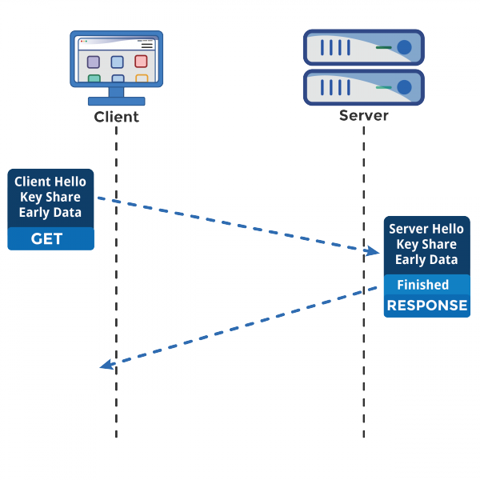

由裸数据传输的 HTTP 协议转成加密数据传输的 HTTPS 协议，给应用数据套了个「保护伞」，提高安全性的同时也带来了性能消耗。
因为 HTTPS 相比 HTTP 协议多一个 TLS 协议握手过程，目的是为了通过非对称加密握手协商或者交换出对称加密密钥，这个过程最长可以花费掉 2 RTT，接着后续传输的应用数据都得使用对称加密密钥来加密/解密。
为了数据的安全性，我们不得不使用 HTTPS 协议，至今大部分网址都已从 HTTP 迁移至 HTTPS 协议，因此针对 HTTPS 的优化是非常重要的。
这次，就从多个角度来优化 HTTPS。
一、分析性能损耗
既然要对 HTTPS 优化，那得清楚哪些步骤会产生性能消耗，再对症下药。
产生性能消耗的两个环节：
- 第一个环节， TLS 协议握手过程；
- 第二个环节，握手后的对称加密报文传输。
对于第二环节，现在主流的对称加密算法 AES、ChaCha20 性能都是不错的，而且一些 CPU 厂商还针对它们做了硬件级别的优化，因此这个环节的性能消耗可以说非常地小。
而第一个环节，TLS 协议握手过程不仅增加了网络延时（最长可以花费掉 2 RTT），而且握手过程中的一些步骤也会产生性能损耗，比如：
- 对于 ECDHE 密钥协商算法，握手过程中会客户端和服务端都需要临时生成椭圆曲线公私钥；
- 客户端验证证书时，会访问 CA 获取 CRL 或者 OCSP，目的是验证服务器的证书是否有被吊销；
- 双方计算 Pre-Master，也就是会话密钥；
为了大家更清楚这些步骤在 TLS 协议握手的哪一个阶段，我画出了这幅图：
二、硬件优化
玩游戏时，如果我们怎么都战胜不了对方，那么有一个最有效、最快的方式来变强，那就是「充钱」，如果还是不行，那说明你充的钱还不够多。
对于计算机里也是一样，软件都是跑在物理硬件上，硬件越牛逼，软件跑的也越快，所以如果要优化 HTTPS 优化，最直接的方式就是花钱买性能参数更牛逼的硬件。
但是花钱也要花对方向，HTTPS 协议是计算密集型，而不是 I/O 密集型，所以不能把钱花在网卡、硬盘等地方，应该花在 CPU 上。
一个好的 CPU，可以提高计算性能，因为 HTTPS 连接过程中就有大量需要计算密钥的过程，所以这样可以加速 TLS 握手过程。
另外，如果可以，应该选择可以支持 AES-NI 特性的 CPU，因为这种款式的 CPU 能在指令级别优化了 AES 算法，这样便加速了数据的加解密传输过程。
如果你的服务器是 Linux 系统，那么你可以使用下面这行命令查看 CPU 是否支持 AES-NI 指令集：
如果我们的 CPU 支持 AES-NI 特性，那么对于对称加密的算法应该选择 AES 算法。否则可以选择 ChaCha20 对称加密算法，因为 ChaCha20 算法的运算指令相比 AES 算法会对 CPU 更友好一点。
三、软件优化
如果公司预算充足对于新的服务器是可以考虑购买更好的 CPU，但是对于已经在使用的服务器，硬件优化的方式可能就不太适合了，于是就要从软件的方向来优化了。
软件的优化方向可以分层两种，一个是软件升级，一个是协议优化。
先说第一个软件升级，软件升级就是将正在使用的软件升级到最新版本，因为最新版本不仅提供了最新的特性，也优化了以前软件的问题或性能。比如：
- 将 Linux 内核从 2.x 升级到 4.x；
- 将 OpenSSL 从 1.0.1 升级到 1.1.1；
- …
看似简单的软件升级，对于有成百上千服务器的公司来说，软件升级也跟硬件升级同样是一个棘手的问题，因为要实行软件升级，会花费时间和人力，同时也存在一定的风险，也可能会影响正常的线上服务。
既然如此，我们把目光放到协议优化，也就是在现有的环节下，通过较小的改动，来进行优化。
四、协议优化
协议的优化就是对「密钥交换过程」进行优化。
密钥交换算法优化
TLS 1.2 版本如果使用的是 RSA 密钥交换算法，那么需要 4 次握手，也就是要花费 2 RTT，才可以进行应用数据的传输，而且 RSA 密钥交换算法不具备前向安全性。
总之使用 RSA 密钥交换算法的 TLS 握手过程，不仅慢，而且安全性也不高。
因此如果可以，尽量选用 ECDHE 密钥交换算法替换 RSA 算法，因为该算法由于支持「False Start」，它是“抢跑”的意思，客户端可以在 TLS 协议的第 3 次握手后，第 4 次握手前，发送加密的应用数据，以此将 TLS 握手的消息往返由 2 RTT 减少到 1 RTT，而且安全性也高，具备前向安全性。
ECDHE 算法是基于椭圆曲线实现的，不同的椭圆曲线性能也不同，应该尽量选择 x25519 曲线，该曲线是目前最快的椭圆曲线。
比如在 Nginx 上，可以使用 ssl_ecdh_curve 指令配置想使用的椭圆曲线，把优先使用的放在前面：
对于对称加密算法方面，如果对安全性不是特别高的要求，可以选用 AES_128_GCM，它比 AES_256_GCM 快一些，因为密钥的长度短一些。
比如在 Nginx 上，可以使用 ssl_ciphers 指令配置想使用的非对称加密算法和对称加密算法，也就是密钥套件，而且把性能最快最安全的算法放在最前面：
TLS 升级
当然，如果可以，直接把 TLS 1.2 升级成 TLS 1.3，TLS 1.3 大幅度简化了握手的步骤，完成 TLS 握手只要 1 RTT，而且安全性更高。
在 TLS 1.2 的握手中，一般是需要 4 次握手，先要通过 Client Hello （第 1 次握手）和 Server Hello（第 2 次握手） 消息协商出后续使用的加密算法，再互相交换公钥（第 3 和 第 4 次握手），然后计算出最终的会话密钥，下图的左边部分就是 TLS 1.2 的握手过程：
上图的右边部分就是 TLS 1.3 的握手过程，可以发现 TLS 1.3 把 Hello 和公钥交换这两个消息合并成了一个消息，于是这样就减少到只需 1 RTT 就能完成 TLS 握手。
怎么合并的呢？具体的做法是，客户端在 Client Hello 消息里带上了支持的椭圆曲线，以及这些椭圆曲线对应的公钥。
服务端收到后，选定一个椭圆曲线等参数，然后返回消息时，带上服务端这边的公钥。经过这 1 个 RTT，双方手上已经有生成会话密钥的材料了，于是客户端计算出会话密钥，就可以进行应用数据的加密传输了。
而且，TLS1.3 对密码套件进行“减肥”了，对于密钥交换算法，废除了不支持前向安全性的 RSA 和 DH 算法，只支持 ECDHE 算法。
对于对称加密和签名算法，只支持目前最安全的几个密码套件，比如 openssl 中仅支持下面 5 种密码套件：
- TLS_AES_256_GCM_SHA384
- TLS_CHACHA20_POLY1305_SHA256
- TLS_AES_128_GCM_SHA256
- TLS_AES_128_CCM_8_SHA256
- TLS_AES_128_CCM_SHA256
之所以 TLS1.3 仅支持这么少的密码套件，是因为 TLS1.2 由于支持各种古老且不安全的密码套件，中间人可以利用降级攻击，伪造客户端的 Client Hello 消息，替换客户端支持的密码套件为一些不安全的密码套件，使得服务器被迫使用这个密码套件进行 HTTPS 连接，从而破解密文。
五、证书优化
为了验证的服务器的身份，服务器会在 TSL 握手过程中，把自己的证书发给客户端，以此证明自己身份是可信的。
对于证书的优化，可以有两个方向：
- 一个是证书传输，
- 一个是证书验证；
证书传输优化
要让证书更便于传输，那必然是减少证书的大小，这样可以节约带宽，也能减少客户端的运算量。所以，对于服务器的证书应该选择 椭圆曲线（ECDSA）证书，而不是 RSA 证书，因为在相同安全强度下， ECC 密钥长度比 RSA 短的多。
证书验证优化
客户端在验证证书时，是个复杂的过程，会走证书链逐级验证，验证的过程不仅需要「用 CA 公钥解密证书」以及「用签名算法验证证书的完整性」，而且为了知道证书是否被 CA 吊销，客户端有时还会再去访问 CA， 下载 CRL 或者 OCSP 数据，以此确认证书的有效性。
这个访问过程是 HTTP 访问，因此又会产生一系列网络通信的开销，如 DNS 查询、建立连接、收发数据等。
CRL
CRL 称为证书吊销列表（Certificate Revocation List），这个列表是由 CA 定期更新，列表内容都是被撤销信任的证书序号，如果服务器的证书在此列表，就认为证书已经失效，不在的话，则认为证书是有效的。
但是 CRL 存在两个问题：
- 第一个问题，由于 CRL 列表是由 CA 维护的，定期更新，如果一个证书刚被吊销后，客户端在更新 CRL 之前还是会信任这个证书，实时性较差；
- 第二个问题，随着吊销证书的增多，列表会越来越大，下载的速度就会越慢，下载完客户端还得遍历这么大的列表，那么就会导致客户端在校验证书这一环节的延时很大，进而拖慢了 HTTPS 连接。
OCSP
因此，现在基本都是使用 OCSP ，名为在线证书状态协议（Online Certificate Status Protocol）来查询证书的有效性，它的工作方式是向 CA 发送查询请求，让 CA 返回证书的有效状态。
不必像 CRL 方式客户端需要下载大大的列表，还要从列表查询，同时因为可以实时查询每一张证书的有效性，解决了 CRL 的实时性问题。
OCSP 需要向 CA 查询，因此也是要发生网络请求，而且还得看 CA 服务器的“脸色”，如果网络状态不好，或者 CA 服务器繁忙，也会导致客户端在校验证书这一环节的延时变大。
OCSP Stapling
于是为了解决这一个网络开销，就出现了 OCSP Stapling，其原理是：服务器向 CA 周期性地查询证书状态，获得一个带有时间戳和签名的响应结果并缓存它。

当有客户端发起连接请求时，服务器会把这个「响应结果」在 TLS 握手过程中发给客户端。由于有签名的存在，服务器无法篡改，因此客户端就能得知证书是否已被吊销了，这样客户端就不需要再去查询。
六、会话复用
TLS 握手的目的就是为了协商出会话密钥，也就是对称加密密钥，那我们如果我们把首次 TLS 握手协商的对称加密密钥缓存起来，待下次需要建立 HTTPS 连接时，直接「复用」这个密钥，不就减少 TLS 握手的性能损耗了吗？
这种方式就是会话复用（TLS session resumption），会话复用分两种：
- 第一种叫 Session ID；
- 第二种叫 Session Ticket；
Session ID
Session ID 的工作原理是，客户端和服务器首次 TLS 握手连接后，双方会在内存缓存会话密钥，并用唯一的 Session ID 来标识，Session ID 和会话密钥相当于 key-value 的关系。
当客户端再次连接时，hello 消息里会带上 Session ID，服务器收到后就会从内存找，如果找到就直接用该会话密钥恢复会话状态，跳过其余的过程，只用一个消息往返就可以建立安全通信。当然为了安全性，内存中的会话密钥会定期失效。
但是它有两个缺点：
- 服务器必须保持每一个客户端的会话密钥，随着客户端的增多，服务器的内存压力也会越大。
- 现在网站服务一般是由多台服务器通过负载均衡提供服务的，客户端再次连接不一定会命中上次访问过的服务器，于是还要走完整的 TLS 握手过程；
Session Ticket
为了解决 Session ID 的问题，就出现了 Session Ticket，服务器不再缓存每个客户端的会话密钥，而是把缓存的工作交给了客户端，类似于 HTTP 的 Cookie。
客户端与服务器首次建立连接时，服务器会加密「会话密钥」作为 Ticket 发给客户端，交给客户端缓存该 Ticket。
客户端再次连接服务器时，客户端会发送 Ticket，服务器解密后就可以获取上一次的会话密钥，然后验证有效期，如果没问题，就可以恢复会话了，开始加密通信。
对于集群服务器的话，要确保每台服务器加密 「会话密钥」的密钥是一致的，这样客户端携带 Ticket 访问任意一台服务器时，都能恢复会话。
Session ID 和 Session Ticket 都不具备前向安全性，因为一旦加密「会话密钥」的密钥被破解或者服务器泄漏「会话密钥」，前面劫持的通信密文都会被破解。
同时应对重放攻击也很困难，这里简单介绍下重放攻击工作的原理。
假设 Alice 想向 Bob 证明自己的身份。Bob 要求 Alice 的密码作为身份证明，爱丽丝应尽全力提供（可能是在经过如哈希函数的转换之后）。与此同时，Eve 窃听了对话并保留了密码（或哈希)。
交换结束后，Eve（冒充 Alice ）连接到 Bob。当被要求提供身份证明时，Eve 发送从 Bob 接受的最后一个会话中读取的 Alice 的密码（或哈希），从而授予 Eve 访问权限。
重放攻击的危险之处在于，如果中间人截获了某个客户端的 Session ID 或 Session Ticket 以及 POST 报文，而一般 POST 请求会改变数据库的数据，中间人就可以利用此截获的报文，不断向服务器发送该报文，这样就会导致数据库的数据被中间人改变了，而客户是不知情的。
避免重放攻击的方式就是需要对会话密钥设定一个合理的过期时间。
Pre-shared Key
前面的 Session ID 和 Session Ticket 方式都需要在 1 RTT 才能恢复会话。
而 TLS1.3 更为牛逼，对于重连 TLS1.3 只需要 0 RTT，原理和 Ticket 类似，只不过在重连时，客户端会把 Ticket 和 HTTP 请求一同发送给服务端，这种方式叫 Pre-shared Key。

同样的，Pre-shared Key 也有重放攻击的危险。
如上图，假设中间人通过某种方式，截获了客户端使用会话重用技术的 POST 请求，通常 POST 请求是会改变数据库的数据，然后中间人就可以把截获的这个报文发送给服务器，服务器收到后，也认为是合法的，于是就恢复会话，致使数据库的数据又被更改，但是此时用户是不知情的。
所以，应对重放攻击可以给会话密钥设定一个合理的过期时间，以及只针对安全的 HTTP 请求如 GET/HEAD 使用会话重用。
七、总结
对于硬件优化的方向，因为 HTTPS 是属于计算密集型，应该选择计算力更强的 CPU，而且最好选择支持 AES-NI 特性的 CPU，这个特性可以在硬件级别优化 AES 对称加密算法，加快应用数据的加解密。
对于软件优化的方向，如果可以，把软件升级成较新的版本，比如将 Linux 内核 2.X 升级成 4.X，将 openssl 1.0.1 升级到 1.1.1，因为新版本的软件不仅会提供新的特性，而且还会修复老版本的问题。
对于协议优化的方向：
- 密钥交换算法应该选择 ECDHE 算法，而不用 RSA 算法，因为 ECDHE 算法具备前向安全性，而且客户端可以在第三次握手之后，就发送加密应用数据，节省了 1 RTT。
- 将 TSL1.2 升级 TSL1.3，因为 TSL1.3 的握手过程只需要 1 RTT，而且安全性更强。
对于证书优化的方向：
- 服务器应该选用 ECDSA 证书，而非 RSA 证书，因为在相同安全级别下，ECC 的密钥长度比 RSA 短很多，这样可以提高证书传输的效率；
- 服务器应该开启 OCSP Stapling 功能，由服务器预先获得 OCSP 的响应，并把响应结果缓存起来，这样 TLS 握手的时候就不用再访问 CA 服务器，减少了网络通信的开销，提高了证书验证的效率；
对于重连 HTTPS 时，我们可以使用一些技术让客户端和服务端使用上一次 HTTPS 连接使用的会话密钥，直接恢复会话，而不用再重新走完整的 TLS 握手过程。
常见的会话重用技术有 Session ID 和 Session Ticket，用了会话重用技术，当再次重连 HTTPS 时，只需要 1 RTT 就可以恢复会话。对于 TLS1.3 使用 Pre-shared Key 会话重用技术，只需要 0 RTT 就可以恢复会话。
这些会话重用技术虽然好用，但是存在一定的安全风险，它们不仅不具备前向安全，而且有重放攻击的风险，所以应当对会话密钥设定一个合理的过期时间。